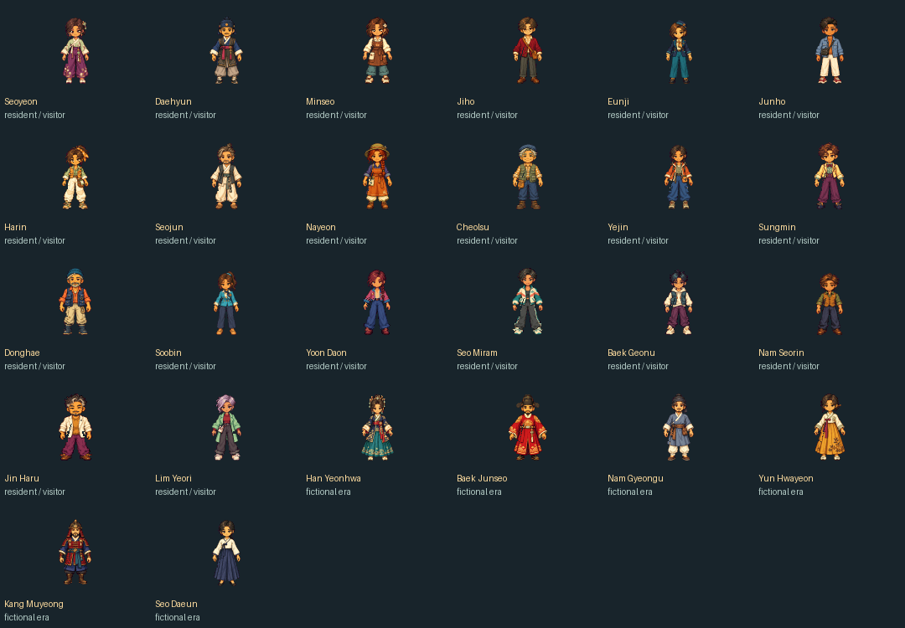

PENDING — chưa công khai candidate này. Bản20 đang phát hành và phê duyệt cũ được giữ nguyên. Phê duyệt cũ không tự áp dụng cho sáu NPC thêm vào, phụ kiện tóc mới và video mới.
Exact manifest: 2318 entries, SHA256 db9d4bb68f31c819d79ec95efaad1befce257086e64c41a5c93c2ba6fe7deb2f
Immutable compiled artifact: 74235a6e7075b77840d2e9fdf36dce678288cd05
Source: e48ea63bf35f0038b24609297dc2e4385c47adcb
Playable ZIP: 244,086,726 bytes · SHA256 bbfbbd3de5220373c1c27d110c5d08af12ae89e0f4756b45737f64b2ad48348d
Tải một ZIP playable · Gallery trước/sau + gameplay · QA · Manifest/artifact proof · Exact pending approval record
Thế giới đã duyệt,12 nhân vật chơi,28 cosmetics với18 biến thể tóc/phụ kiện sửa và một đối chứng nguyên byte;26 danh tính NPC hư cấu; Review Portal/Daily Life hiện có; sáu video gameplay mới không audio; native review crops và snapshot20 cũ nguyên byte. Raw masters, prompts, tư liệu lịch sử chưa kiểm chứng và video26 riêng tư cũ không xuất bản. Không có ảnh/giọng người nổi tiếng, logo hay nhạc mới.
ZIP đã giải nén/CRC/hash; xem PACKAGE_PROOF.json cho kết quả chạy thực tế từ bản giải nén. Typecheck/assets/lint/format/build và173 unit đạt. Full E2E:70 PASS/2 FAIL ở lượt đầu, hai follow-up PASS; không đổi kết quả thành một lượt72 PASS. Native readback30 capture sai lệch0 pixel đục. Android/iPhone thật/GPU vẫn NOT TESTED. Kiểm thử kỹ thuật không phải phê duyệt mỹ thuật.

| Danh tính công khai | Kết quả đánh giá có giới hạn |
|---|---|
| Seoyeon · 서연 | PASS limited existing-fictional screen; approved pixels unchanged |
| Daehyun · 대현 | PASS limited existing-fictional screen; approved pixels unchanged |
| Minseo · 민서 | PASS limited existing-fictional screen; approved pixels unchanged |
| Jiho · 지호 | PASS limited existing-fictional screen; approved pixels unchanged |
| Eunji · 은지 | PASS limited existing-fictional screen; approved pixels unchanged |
| Junho · 준호 | PASS limited existing-fictional screen; approved pixels unchanged |
| Harin · 하린 | PASS limited existing-fictional screen; approved pixels unchanged |
| Seojun · 서준 | PASS limited existing-fictional screen; approved pixels unchanged |
| Nayeon · 나연 | PASS limited existing-fictional screen; approved pixels unchanged |
| Cheolsu · 철수 | PASS limited existing-fictional screen; approved pixels unchanged |
| Yejin · 예진 | PASS limited existing-fictional screen; approved pixels unchanged |
| Sungmin · 성민 | PASS limited existing-fictional screen; approved pixels unchanged |
| Donghae · 동해 | PASS limited existing-fictional screen; approved pixels unchanged |
| Soobin · 수빈 | PASS limited existing-fictional screen; approved pixels unchanged |
| Yoon Daon · 윤다온 | PASS limited existing-fictional screen; approved pixels unchanged |
| Seo Miram · 서미람 | PASS limited existing-fictional screen; approved pixels unchanged |
| Baek Geonu · 백건우 | PASS limited existing-fictional screen; approved pixels unchanged |
| Nam Seorin · 남서린 | PASS limited existing-fictional screen; approved pixels unchanged |
| Jin Haru · 진하루 | PASS limited existing-fictional screen; approved pixels unchanged |
| Lim Yeori · 임여리 | PASS limited existing-fictional screen; approved pixels unchanged |
| Han Yeonhwa · 한연화 | NEEDS OWNER REVIEW — era/costume association; no specific copied work established in limited inspection |
| Baek Junseo · 백준서 | NEEDS OWNER REVIEW — era/costume association; no specific copied work established in limited inspection |
| Nam Gyeongu · 남경우 | NEEDS OWNER REVIEW — era/costume association; no specific copied work established in limited inspection |
| Yun Hwayeon · 윤화연 | NEEDS OWNER REVIEW — era/costume association; no specific copied work established in limited inspection |
| Kang Muyeong · 강무영 | NEEDS OWNER REVIEW — era/costume association; no specific copied work established in limited inspection |
| Seo Daeun · 서다은 | NEEDS OWNER REVIEW — era/costume association; no specific copied work established in limited inspection |
Tài khoản cá nhân Plus do chủ dự án kiểm soát, không hợp đồng riêng; hồ sơ điều khoản Output/commercial-use là thông tin nguồn chính thức do chủ dự án cung cấp. Không tuyên bố tự truy cập xác minh các trang OpenAI. Quyền Output giữa OpenAI/người dùng không chứng nhận quyền bên thứ ba. Không yêu cầu26 giấy phép riêng.
Sáu NPC đã có danh tính/lời thoại hư cấu. Không xác định được một tác phẩm sao chép hay chân dung nghệ sĩ thương mại cụ thể từ hồ sơ đã xem; tên hư cấu không tự tạo clearance. Hình tượng học giả áo đỏ của Baek Junseo có liên tưởng hoàng gia mạnh nhất; các liên tưởng vương phục/giáp/sinh viên được ghi riêng trong bảng đánh giá6. Không tự sửa atlas đã duyệt khi chưa có nguồn vi phạm cụ thể.
Yêu cầu một quyết định: chủ dự án có phê duyệt public-preview đúng manifest/artifact trên, bao gồm sáu hình tượng hư cấu đã nêu, phụ kiện dẫn xuất và sáu video mới không? Đây không phải xác nhận an toàn pháp lý hay phát hành thương mại.
Sau quyết định đúng scope: dùng workflow GitHub Pages hiện có, giữ required reviewer github-pages, xác minh HTTPS/manifest/26NPC/input/mobile trước khi công bố hoàn tất. Không main merge, không đổi v0.5, không Phase3B-C/D. Snapshot/rollback giữ nguyên.